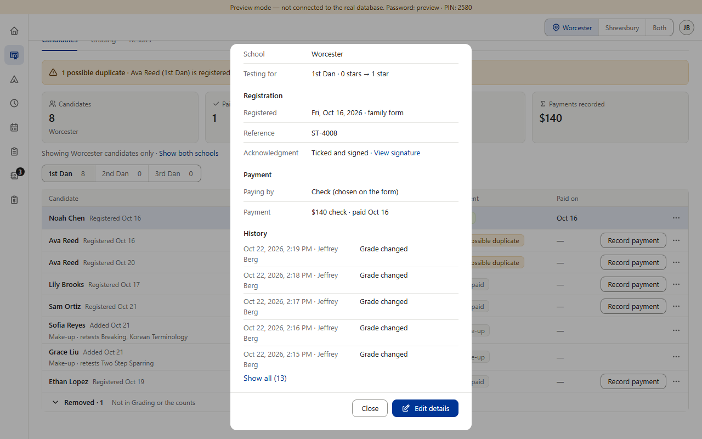
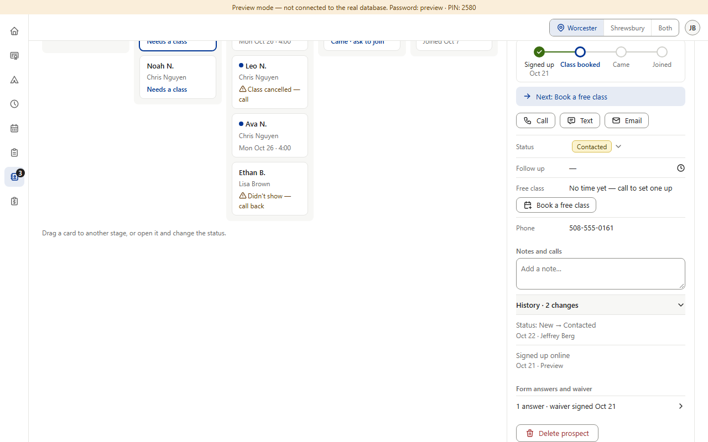
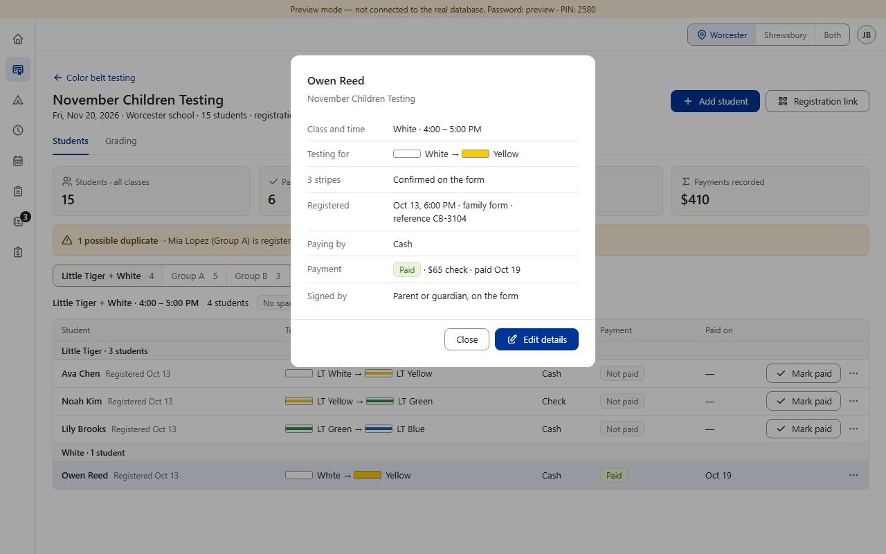
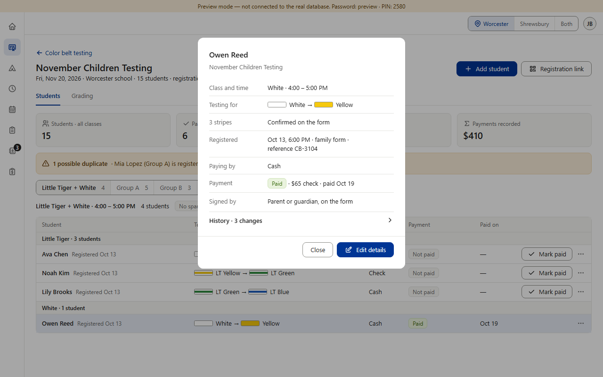
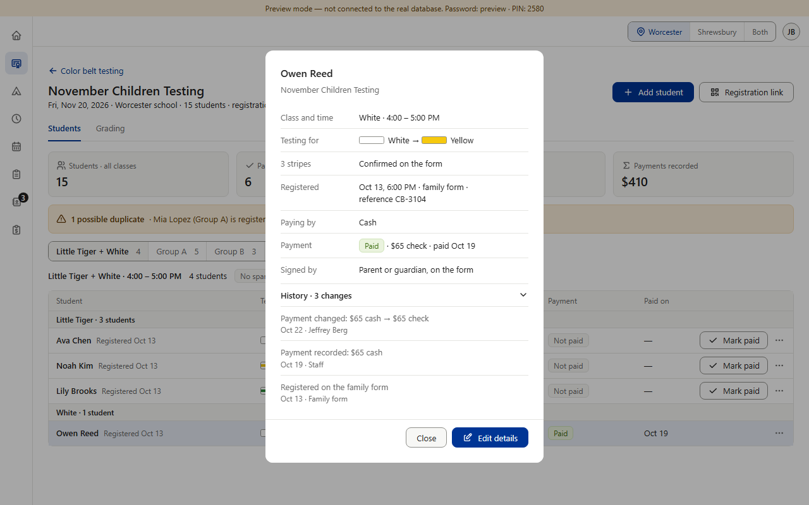
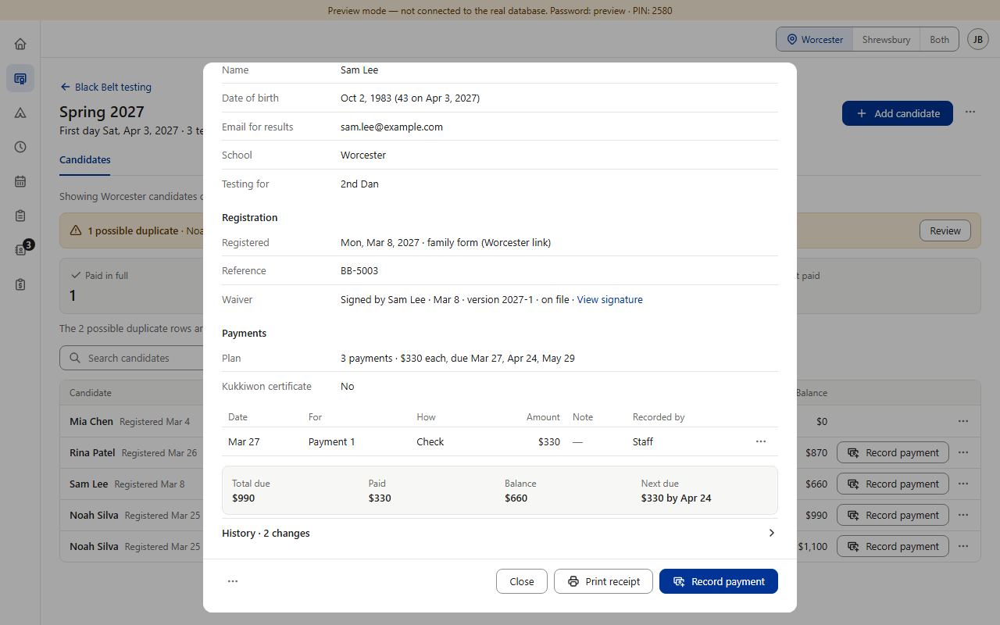

Approved in two sections, missing in two, left out on purpose in one. Rule §5: every change is logged with who made it and when, “visible in the record's history”. Every section already writes each change to the change log — but only Star and Prospects show it, and in two different ways. Color Belt and Camps never decided (missing, not planned); Black Belt left it out on purpose to keep its summary short (approved, v0.900). (Preview screenshots at PC size · fake data)





